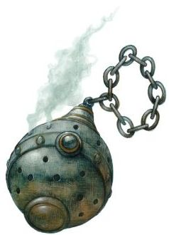

Panthéon
La religion est une partie importante de la vie dans les mondes de D&D. Lorsque des dieux parcourent le monde, des clercs canalisent la puissance divine, des sectes perverses effectuent de sombres sacrifices dans des sites souterrains et des paladins se dressent contre l'obscurité, il est difficile d'être sceptique au sujet des divinités et de nier leur existence.
Beaucoup de personnes dans les mondes de D&D adorent des dieux différents, à différents moments et en différentes circonstances. On prie Sunie pour avoir de la chance en amour, on fait une offrande à Waukyne avant de partir pour le marché, et on prie pour apaiser Talos quand une violente tempête souffle, tout cela durant la même journée. Nombreux sont toutefois ceux qui ont un favori parmi les dieux, et certains se consacrent entièrement à un seul dieu, servant généralement comme clerc ou champion des idéaux de ce dieu.
Chaque monde du multivers de D&D possède son propre panthéon de divinités. Le panthéon décrit ici est celui des Royaumes Oubliés pour D&D 5. Des dizaines de divinités sont ainsi vénérées, adorées, et craintes à travers le monde des Royaumes Oubliés. Au moins trente divinités y sont largement connues à travers tout le continent, et bien d'autres sont adorées au niveau local, par des tribus, de petits cultes ou certaines sectes de grands temples religieux.
| Dieu | Alignement | Domaines suggérés |
|---|---|---|
| Aurile, déesse de l'hiver | NM | Nature, Tempête |
| Azouth, dieu des magiciens | LN | Savoir |
| Baine, dieu de la tyrannie | LM | Guerre |
| Beshaba, déesse de la malchance | CM | Duperie |
| Bhaal, dieu du meurtre | NM | Mort |
| Chauntéa, déesse de l'agriculture | NB | Vie |
| Cyric, dieu du mensonge | CM | Duperie |
| Déneïr, dieu de l'écriture | NB | Savoir |
| Eldath, déesse de la paix | NB | Nature, Vie |
| Gond, dieu de l'artisanat | N | Savoir |
| Heaume, dieu de la protection | LN | Lumière, Vie |
| Ilmater, dieu de l'endurance | LB | Vie |
| Kélemvor, dieu des morts | LN | Mort |
| Lathandre, dieu de la naissance et du renouveau | NB | Lumière, Vie |
| Leira, déesse de l'illusion | CN | Duperie |
| Lliira, déesse de la joie | CB | Vie |
| Loviatar, déesse de la souffrance | LM | Mort |
| Mailikki, déesse des forêts | NB | Nature |
| Malar, dieu de la chasse | CM | Nature |
| Mask, dieu des voleurs | CN | Duperie |
| Milil, dieu de la poésie et des chants | NB | Lumière |
| Myrkul, dieu de la mort | NM | Mort |
| Mystra, déesse de la magie | NB | Savoir |
| Oghma, dieu de la connaissance | N | Savoir |
| Savras, dieu de la divination et du destin | LN | Savoir |
| Séluné, déesse de la lune | CB | Savoir, Vie |
| Shar, déesse des ténèbres et de la perte | NM | Duperie, Mort |
| Sunie, déesse de l'amour et de la beauté | CB | Lumière, Vie |
| Sylvanus, dieu de la nature sauvage | N | Nature |
| Talona, déesse de la maladie et du poison | CM | Mort |
| Talos, dieu des tempêtes | CM | Tempête |
| Tempus, dieu de la guerre | N | Guerre |
| Torm, dieu du courage et du sacrifice de soi | LB | Guerre |
| Tymora, déesse de la chance | CB | Duperie |
| Tyr, dieu de la justice | LB | Guerre |
| Umberlie, déesse des mers | CM | Tempête |
| Waukyne, déesse du commerce | N | Duperie, Savoir |
Dieux des non-humains
Les races non humaines ont souvent un panthéon complet qui leur est propre. Par exemple, outre Moradin, le panthéon nain comprend la femme de Moradin, Berronar Purargent, et un certain nombre d'autres dieux qu'on pense être leurs enfants ou leurs petits-enfants : Abbathor, Clangeddin Barbeargent, Dugmaren Brilletoge, Dumathoïn, Gorm Gulthyn, Haela Brillehache, Marthammor Duin, Sharindlar, Thard Harr et Vergadain. En pratique, les clans et les royaumes nains peuvent vénérer certaines, toutes ou aucune de ces divinités, mais aussi vénérer certains autres dieux inconnus (ou connus sous un autre nom) des autres races.
| Dieu | Alignement | Domaines suggérés |
|---|---|---|
| Bahamut, dieu du Bien des dragons | LB | Guerre, Vie |
| Blibdoolpoolp, déesse kuo-toa | NM | Mort |
| Corellon Larethian, dieu elfe de l'art et de la magie | CB | Lumière |
| Eadro, dieu de la mer des hommes-poissons | N | Nature, Tempête |
| Garl Brilledor, dieu gnome de la duperie et des ruses | LB | Duperie |
| Grolantor, dieu de la guerre des géants des collines | CM | Guerre |
| Gruumsh, dieu orc des tempêtes et de la guerre | CM | Guerre, Tempête |
| Hruggek, dieu gobelours de la violence | CM | Guerre |
| Kurtulmak, dieu kobold de la guerre et des mines | LM | Guerre |
| Laogzed, dieu troglodyte de la faim | CM | Mort |
| Lolth, déesse drow des araignées | CM | Duperie |
| Maglubiyet, dieu gobelin de la guerre | LM | Guerre |
| Moradin, dieu nain de la création | LB | Savoir |
| Rillifane Rallathil, dieu elfe de la nature | CB | Nature |
| Sashalas des Profondeurs, dieu elfe de la mer | CB | Nature, Tempête |
| Sehanine Archelune, déesse elfe de la lune | CB | Savoir |
| Sekolah, dieu de la chasse des sahuagins | LM | Nature, Tempête |
| Semuanya, dieu de la survie des hommes-lézards | N | Vie |
| Skerrit, dieu de la nature des centaures et des satyres | N | Nature |
| Skoraeus Os-de-pierre, dieu des géants des pierres et de l'art | N | Savoir |
| Surtur, dieu des géants du feu et de l'artisanat | LM | Guerre, Savoir |
| Thrym, dieu des géants du givre et de la force | CM | Guerre |
| Tiamat, déesse du Mal des dragons | LM | Duperie |
| Yondalla, déesse halfeline de la fertilité et de la protection | LB | Vie |